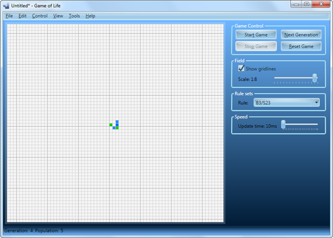
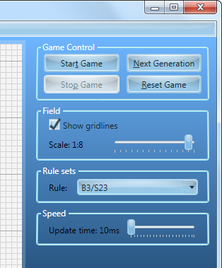
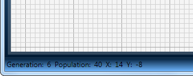

Game of Life overview
Main window
There can be identified 4 main blocks in the main application window: menu (top part), control panel (right part), playing field (central part), stutus bar (bottom part).
Menu
- File - file operations such as opening, saving, creating a new.
- Edit - undo/redo, clipboard operations, transformations, etc.
- Control - start, stop, next generation, reset the game.
- View - fitting and centering pattern to size of the window.
- Tools - user preferences.
- Help - help viewer, navigate to the homepage of the project.
Control panel
- Game Control
- Start Game - starts generating the current pattern.
- Next Generation - advances the pattern to the next generation.
- Stop Game - stops generating the current pattern.
- Reset Game - restore pattern and generation count in the state before the first generation.
- Field
- Show gridlines - show/hide grid lines.
- Scale - control the scale of the universe.
- Rule sets
- Rule - determines the rules that govern the universe.
- Speed
- Update time - time for generating new generation (in milliseconds).
Status bar
- Generation - number of current generation.
- Population - population size of the current generation.
- X - horizontal coordinate of the cell, hovered by cursor.
- Y - vertical coordinate of the cell, hovered by cursor.